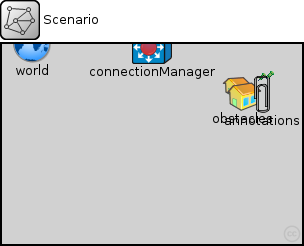
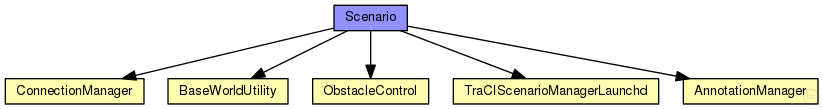

This documentation is released under the Creative Commons license
This documentation is released under the Creative Commons license(no description)
The following diagram shows usage relationships between types. Unresolved types are missing from the diagram. Click here to see the full picture.
The following diagram shows inheritance relationships for this type. Unresolved types are missing from the diagram. Click here to see the full picture.

| Name | Type | Description |
|---|---|---|
| epidemic_rsu | network | (no description) |
| mfcv_epidemic_rsu | network | (no description) |
| mfcv_rsu | network | (no description) |
| net_advanced_flooding | network | (no description) |
| net_flooding | network | (no description) |
| RSU_bologna_acosta | network | (no description) |
| RSU_default_veins | network | (no description) |
| RSU_minicurso_UFPI | network | (no description) |
| RSU_osdp | network | (no description) |
| rsu_range | network | (no description) |
| rsu_range2 | network | (no description) |
| RSU_service_discovery | network | (no description) |
| RSU_test1 | network | (no description) |
| vehDist_rsu | network | (no description) |
| Name | Type | Default value | Description |
|---|---|---|---|
| playgroundSizeX | double |
x size of the area the nodes are in (in meters) |
|
| playgroundSizeY | double |
y size of the area the nodes are in (in meters) |
|
| playgroundSizeZ | double |
z size of the area the nodes are in (in meters) |
| Name | Value | Description |
|---|---|---|
| isNetwork | ||
| display | bgb=$playgroundSizeX,$playgroundSizeY |
| Name | Type | Default value | Description |
|---|---|---|---|
| obstacles.debug | bool | false |
emit debug messages? |
| obstacles.obstacles | xml | xml(" |
obstacles to add at startup |
| annotations.debug | bool | false |
emit debug messages? |
| annotations.draw | bool | false |
draw annotations? |
| annotations.annotations | xml | xml(" |
annotations to add at startup |
| connectionManager.coreDebug | bool |
debug switch for core framework |
|
| connectionManager.sendDirect | bool |
send directly to the node or create separate gates for every connection |
|
| connectionManager.pMax | double |
maximum sending power used for this network [mW] |
|
| connectionManager.sat | double |
minimum signal attenuation threshold [dBm] |
|
| connectionManager.alpha | double |
minimum path loss coefficient |
|
| connectionManager.carrierFrequency | double |
minimum carrier frequency of the channel [Hz] |
|
| connectionManager.drawMaxIntfDist | bool | false |
should the maximum interference distance be displayed for each node? |
| world.useTorus | bool | false |
use the playground as torus? |
| world.use2D | bool | false |
use a 2-dimensional world? |
| manager.debug | bool | false |
emit debug messages? |
| manager.connectAt | double | 0s |
when to connect to TraCI server (must be the initial timestep of the server) |
| manager.firstStepAt | double | -1s |
when to start synchronizing with the TraCI server (-1: immediately after connecting) |
| manager.updateInterval | double | 1s |
time interval of hosts' position updates |
| manager.moduleType | string | "inet.nodes.wireless.WirelessHostSimplified" |
module type to be used in the simulation for each managed vehicle |
| manager.moduleName | string | "host" |
module name to be used in the simulation for each managed vehicle |
| manager.moduleDisplayString | string | "i=misc/node2;is=vs;r=0,,#707070,1" |
module displayString to be used in the simulation for each managed vehicle |
| manager.host | string | "localhost" |
sumo-launchd.py server hostname |
| manager.port | int | 9999 |
sumo-launchd.py server port |
| manager.launchConfig | xml |
launch configuration to send to sumo-launchd.py |
|
| manager.seed | int | -1 |
seed value to set in launch configuration, if missing (-1: current run number) |
| manager.autoShutdown | bool | true |
Shutdown module as soon as no more vehicles are in the simulation |
| manager.margin | int | 25 |
margin to add to all received vehicle positions |
| manager.roiRoads | string | "" |
which roads (e.g. "hwy1 hwy2") are considered to consitute the region of interest, if not empty |
| manager.roiRects | string | "" |
which rectangles (e.g. "0,0-10,10 20,20-30,30) are considered to consitute the region of interest, if not empty |
| manager.penetrationRate | double | 1 |
the probability of a vehicle being equipped with Car2X technology |
| manager.numVehicles | int | 0 | |
| manager.useRouteDistributions | bool | false | |
| manager.vehicleRngIndex | int | 0 |
index of the RNG stream to be used, all random numbers concerning the managed vehicles |
network Scenario { parameters: double playgroundSizeX @unit(m); // x size of the area the nodes are in (in meters) double playgroundSizeY @unit(m); // y size of the area the nodes are in (in meters) double playgroundSizeZ @unit(m); // z size of the area the nodes are in (in meters) @display("bgb=$playgroundSizeX,$playgroundSizeY"); submodules: obstacles: ObstacleControl { @display("p=240,50"); } annotations: AnnotationManager { @display("p=260,50"); } connectionManager: ConnectionManager { parameters: @display("p=150,0;i=abstract/multicast"); } world: BaseWorldUtility { parameters: playgroundSizeX = playgroundSizeX; playgroundSizeY = playgroundSizeY; playgroundSizeZ = playgroundSizeZ; @display("p=30,0;i=misc/globe"); } manager: TraCIScenarioManagerLaunchd { parameters: @display("p=512,128"); } connections allowunconnected: }
This documentation is released under the Creative Commons license